, 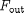, , 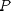. The system contains differential equations () and differential variables, , .
, 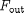, , 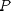. The system contains differential equations () and differential variables, , .We consider the well-stirred tank, shown in the figure below, used to mix two streams under isothermal conditions.
The mathematical model of the system is:
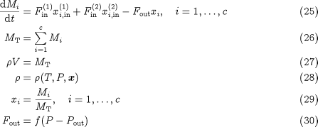
This is a set of (2 + 4) equations in the (2 + 4) variables 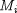, , 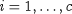; , 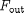, , 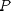. The system contains differential equations () and differential variables, , .
We note that with this model, we can give 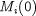 arbitrary values: given , we can calculate 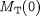 from 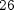; 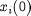 from ; 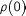 from ; 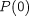 from ; 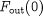 from ; and finally from . Hence, this is an index-1 system.
The above equations are valid for both gas and liquid systems. Of course, a reasonable simplifcation for liquids is to assume that they are incompressible. Therefore, equation is simplified to:

Once again, if we specify , , we can calculate from , from and from . At this point, however, we hit a problem: both sides of equation are already known! Effectively, we cannot specify , independently. Therefore we have a high-index problem.
To see more clearly how the problem arises, consider combining , , and into a single equation:
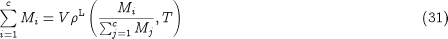
It is obvious that 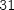 only invovles the differential variables , and, therefore, not all of them can be given arbitrary initial values. For instance, for an ideal liquid mixture, is of the form:
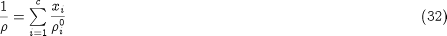
and becomes:
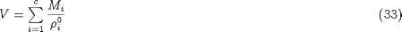
where 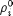 is the (constant) density of pure component . Thus, 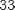 is a total volume constraint. Differentiating with respect to time, we obtain:
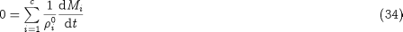
which, together with , lead to:
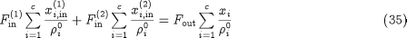
which is equivalent to:
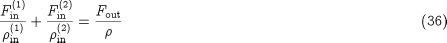
i.e. a relationship between the volumetric flowrates of the input and output streams. Note that this is true for ideal liquid mixtures only (i.e. those obeying ), but in any case a similar restriction could be obtained from the more general equation with respect to time.
In any case, is an additional constraint that must be satisfied by the initial condition of the system. We can therefore give arbitrary initial values to only variables. For instance, if we specify , 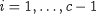, we can calculate 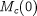 from , then from , from , , from , from 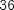, from and finally 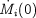, from .
No further equation differentiations are necessary, and therefore this is an index-2 system.